NeurIPS 2025
Rectified-CFG++
Geometry-Aware Guidance for Rectified Flow Models
Shreshth Saini
Laboratory for Image & Video Engineering (LIVE) · The University of Texas at Austin
Advised by Prof. Alan C. Bovik
Why does guidance break on the
best image generators?
Flux, SD3, SD3.5 use rectified flows — deterministic ODE.
Standard CFG pushes trajectories permanently off-manifold.
Why Do We Need Guidance At All?
Without guidance, flow models generate plausible but generic images that loosely match the prompt
The problem with unconditional generation
Models trained with conditioning dropout learn both p(x|y) and p(x). Without guidance, outputs come from a mixture of conditional and unconditional — resulting in low prompt adherence, muted details, and bland compositions.
What guidance should do
Amplify the conditional signal — push generation toward what the prompt describes. Sharper details, more vivid colors, better text-image alignment. This is what CFG achieves in diffusion models (DDPM, SDXL).
What actually happens on flow models
CFG was designed for stochastic SDE samplers. Flow models use deterministic ODE. The extrapolation that works in SDEs becomes catastrophic in ODEs — artifacts, color blow-out, structural distortion.
Flux-dev: Same prompt, same seed
No guidance: dark, muddy, poor prompt adherence. CFG: improved adherence but oversaturated, unnatural. Ours: clean, natural, faithful to prompt.
SD3.5: Same pattern — CFG oversaturates, ours stays natural.
CFG Artifacts on Flow Models: A Gallery of Failures
All images generated with standard CFG on flow models. These are not cherry-picked — this is what CFG does to every prompt.
Flux-dev with CFG ω=3 (from paper Figure 6)
SD3 with CFG ω=3–3.5
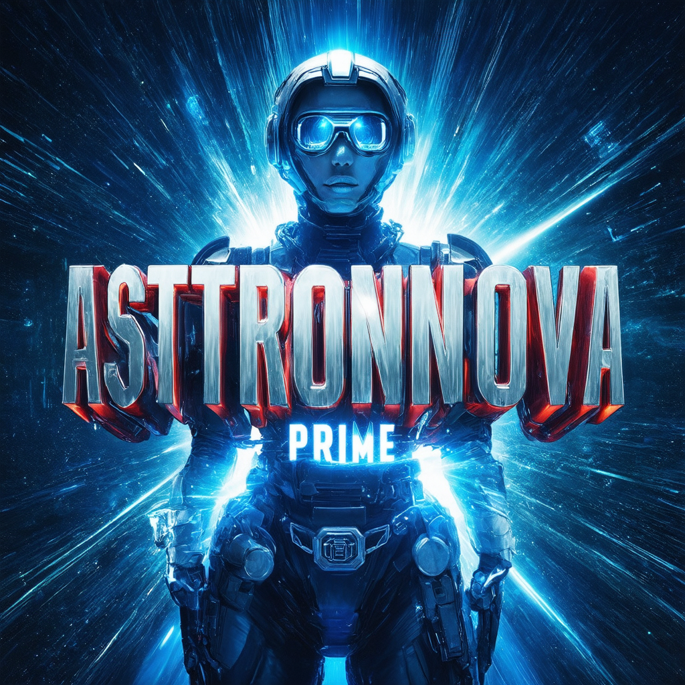
Common failure modes: (1) Oversaturation — colors pushed beyond natural range. (2) Cartoonification — photorealistic becomes plastic. (3) Text corruption — letters distort and merge. (4) Detail blowout — fine textures replaced by flat patches.
Not rare failures. CFG artifacts appear on every prompt across Flux, SD3, and SD3.5. The problem is fundamental: CFG extrapolation is incompatible with the deterministic ODE used by all modern flow models.
Root Cause: Why CFG Breaks on Flows but Works on Diffusion
The same extrapolation trick, but fundamentally different samplers
Obviously broken: CFG on SD3 & Flux
Garbled text ("Cyberre Cidie"), misspellings ("Entφy amd"), plastic cartoonification — all from standard CFG.
SDE Sampler (Diffusion) vs ODE Sampler (Flows)
Diffusion SDEs: built-in safety net
Each step adds Gaussian noise — the renoising step. This noise accidentally provides error correction: even when CFG pushes off-manifold, the stochastic noise partially pulls the sample back toward the learned distribution.
Discrete (DDPM): xt-1 = μθ(xt, t) + σt·z, z ~ N(0, I). The σt·z term adds fresh noise at every step — pulling samples back toward the learned distribution.
Flow ODEs: no correction mechanism
Rectified flows use a purely deterministic ODE. Once CFG pushes the trajectory off the manifold at step t, there is no mechanism to return. The off-manifold point becomes the starting point for step t+1.
Compounding error
At each step, CFG evaluates guidance at an off-manifold point — making the velocity direction even more wrong. Errors accumulate monotonically across all N sampling steps. The more steps, the worse it gets.
This is why we need a fundamentally different approach — not a fix for CFG, but a new guidance paradigm designed specifically for deterministic ODE samplers.
What Would an Ideal Guidance Method Look Like?
Desiderata for guidance on rectified flow models
D1: Stay on the manifold
The guided trajectory must remain in a bounded neighbourhood of the learned transport manifold Mt. No off-manifold drift, no error accumulation.
D2: Adaptive — strong early, gentle late
Early steps determine global structure (layout, color palette) — guidance should be strong. Late steps resolve fine details (text, textures) — guidance should vanish to prevent corruption.
D3: Provable guarantees
Not just empirically better — we want formal bounds on manifold distance and distributional deviation. No prior guidance method provides this.
D4: Drop-in replacement
Works with any pretrained flow model — Flux, SD3, SD3.5, Lumina — without retraining. Just swap the sampling algorithm.
Do existing methods satisfy these?
| Method | D1 | D2 | D3 | D4 |
|---|---|---|---|---|
| CFG | ✗ | ✗ | ✗ | ✓ |
| CFG-Zero* | ✗ | ✗ | ✗ | ✓ |
| APG | ~ | ✗ | ✗ | ✓ |
| Rect-CFG++ (Ours) | ✓ | ✓ | ✓ | ✓ |
Our key insight: Don't extrapolate the guidance direction from the current point. Instead, predict a midpoint on the manifold, evaluate guidance there, and apply it as a bounded additive correction to the conditional velocity.
Three ideas → three guarantees:
Predictor half-step (on-manifold evaluation) + Adaptive α(t) (vanishing guidance) + Bounded correction (interpolation not extrapolation)
The Geometric Insight: Why CFG Fails and How We Fix It

Three panels: (Left) Ideal flow on manifold. (Center) CFG extrapolates off-manifold. (Right) Rect-CFG++ stays on-manifold via predictor-corrector. Let's walk through each.
Why does CFG work in diffusion but not in flows?
In diffusion models (SDE samplers like DDPM), each step adds stochastic noise — the renoising step. This noise acts as implicit error correction: even if CFG pushes the trajectory off-manifold, the added noise partially brings it back. It's a built-in safety net.
In rectified flow models (ODE solvers like Flux), sampling is purely deterministic — there is no renoising step. Once CFG pushes the trajectory off the manifold, there is no mechanism to return. The error at step t becomes the starting point for step t-1, and the next CFG extrapolation makes it worse. Errors accumulate monotonically across all sampling steps.
Geometric Insight (1/3): The Ideal Flow on the Manifold
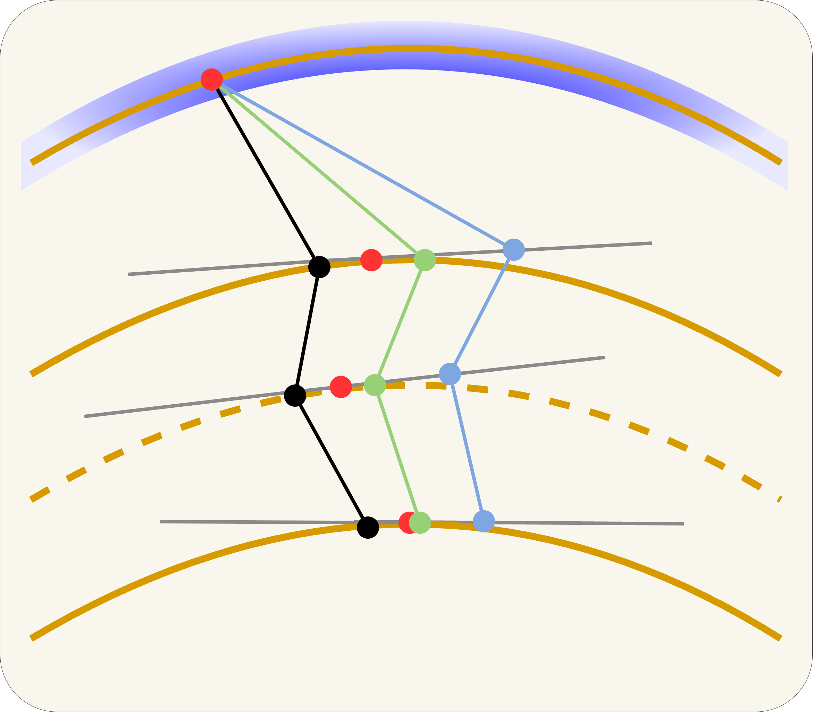
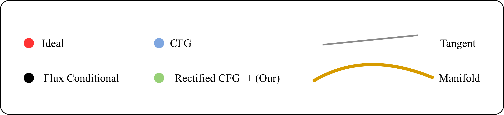
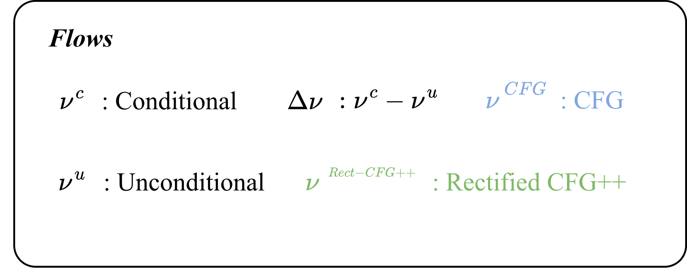
What you're seeing
Three manifolds: Mt (current time, blue/gold band), Mt-1 (next step), M0 (data, orange curve at bottom). The red dots are the ideal positions at each timestep.
The ideal trajectory
The ideal sample flows along the manifold surface from Mt → Mt-1 → M0. At each step, the velocity lies in the tangent space of the manifold — never leaving it.
Three flows shown
Blue = Flux conditional (vc), Red = CFG (extrapolated), Green = Rectified-CFG++ (ours). Notice how green and blue stay near the manifold while red diverges.
Key question
How do we guide the generation (improve text adherence) while staying on the manifold? Let's see what goes wrong first...
Geometric Insight (2/3): CFG Extrapolates Off-Manifold
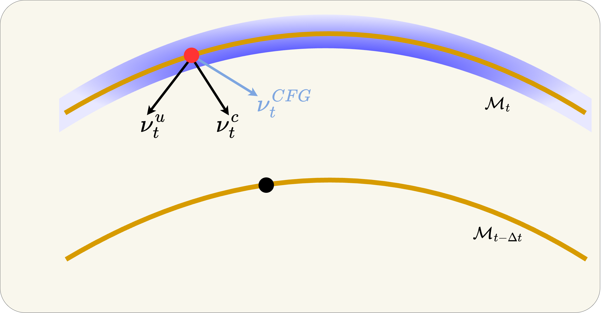
What CFG does
Starting from the black dot on Mt, CFG computes the guided velocity v̂ω at the current point. With ω>1, this velocity extrapolates past the conditional velocity vc.
The tangent space violation
The guided velocity v̂ω does not belong to the tangent space TxtMt. The resulting Euler step lands the sample off Mt-1. In a deterministic ODE, there is no mechanism to return.
The compounding effect
At the next step, CFG evaluates guidance at the off-manifold point — making the direction even worse. Errors accumulate at every step. By the final image: oversaturation, color blow-out, structural distortion.
Geometric Insight (3/3): Our Predictor-Corrector Stays On-Manifold
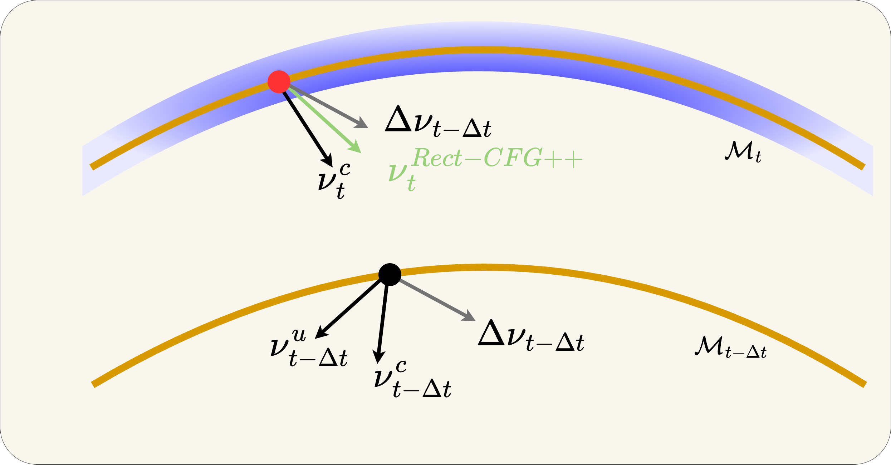
Step 1: Predict midpoint with vc only
Take a half-step using only the conditional velocity: x̃mid = xt + (Δt/2)·vct. Since vc lies in the tangent space, x̃mid lands on or near Mt-Δt/2.
Step 2: Evaluate guidance at the predicted midpoint
Compute vcmid and vumid at x̃mid. The guidance direction Δvmid = vcmid − vumid is evaluated on the manifold, reflecting the geometry of the target manifold Mt-Δt.
Step 3: Apply bounded interpolative correction
α(t) = λmax(1-t)γ. Base velocity is always vc (on manifold). Correction is additive and bounded. α(t)→0 near data → fine details preserved.
Result: trajectory stays in bounded tubular neighbourhood of Mt
The Core Distinction: Extrapolation vs. Interpolation
This single difference explains why CFG fails and Rect-CFG++ works
CFG: Extrapolation (ω > 1)
CFG moves PAST the conditional direction.
ω=3 means 3× the distance from vu to vc. Overshoots into unknown territory.
Ours: Interpolation (0 ≤ α ≤ 1)
Ours stays BETWEEN vc and vc+Δv.
Base is always vc (on manifold). Correction α(t)·Δvmid is bounded and decays to 0 near data.
Algorithm: CFG vs. Rectified-CFG++ (Side-by-Side)
Color highlights show exactly what changes — green = our additions
Standard CFG Sampling
for t = T down to 1:
vc = vθ(xt, t, y)
vu = vθ(xt, t, ∅)
v̂ = vu + ω(vc − vu) ← extrapolation!
xt-1 = xt + Δt · v̂
2 NFE/step. ω>1 pushes off manifold. No correction.
Rectified-CFG++ (Ours)
for t = T down to 1:
vc = vθ(xt, t, y)
x̃mid = xt + (Δt/2)·vc ← predictor
vcmid = vθ(x̃mid, t-Δt/2, y)
vumid = vθ(x̃mid, t-Δt/2, ∅)
v̂ = vc + α(t)(vcmid − vumid) ← interpolation!
xt-1 = xt + Δt · v̂
3 NFE/step. α(t)=λ(1-t)γ decays → on-manifold. Bounded.
Key differences: (1) Base velocity is always vc, not extrapolated. (2) Guidance evaluated at predicted midpoint on manifold, not current point. (3) Adaptive α(t) → 0 near data.
Guidance Methods Compared: Equations & Properties
Four approaches to the same problem — only ours avoids extrapolation entirely
Standard CFG (Ho & Salimans, 2022)
ω > 1 → extrapolation past vc. Designed for SDEs with renoising. On ODEs: off-manifold drift, oversaturation, error accumulation. Constant guidance at all timesteps.
CFG-Zero* (Wang et al., 2024)
Adds an optimal rescaling factor st* to align unconditional/conditional norms. Reduces initial drift but still extrapolates (ω > 1). No late-step adaptation — fine details still corrupted.
APG (Sadat et al., 2024)
Projects guidance direction onto perpendicular subspace to reduce parallel component. Partial mitigation but guidance still evaluated at current point (possibly off-manifold). No decay schedule, no formal bounds.
Rectified-CFG++ (Ours)
Three key differences: (1) Base = vc always (on-manifold). (2) Guidance at predicted midpoint x̃mid (on-manifold). (3) α(t) = λ(1-t)γ → 0 near data. Bounded, interpolative, provable.
| Property | CFG | CFG-Zero* | APG | Ours |
|---|---|---|---|---|
| Guidance type | Extrapolation | Extrapolation | Projection | Interpolation |
| Evaluated at | Current xt | Current xt | Current xt | Predicted x̃mid |
| Temporal schedule | None (constant) | None | None | α(t) → 0 |
| Formal guarantees | ✗ | ✗ | ✗ | ✓ (3 props) |
| NFE per step | 2 | 2 | 2 | 3 |
Theoretical Guarantees — First Provable Bounds for Flow Guidance
Four mild assumptions → three rigorous guarantees. No prior guidance method has these.
Assumptions
(A1) vθ(x,t,y) and vθ(x,t,∅) are L-Lipschitz in x
(A2) Guidance direction bounded: ‖Δvtθ(x)‖ ≤ B
(A3) Schedule α(t) is bounded and integrable
(A4) Conditional velocity bounded: ‖vct‖ ≤ Vmax
All standard regularity conditions. Lipschitz and boundedness are satisfied by any well-trained neural network. No exotic assumptions needed.
Lemma 1: Guidance Stability
Guidance direction at the predicted midpoint differs from guidance at current point by only O(Δt). The predictor doesn't introduce large errors.
Proposition 1: Bounded Single-Step Perturbation
Deviation from the pure conditional path is controlled by α(t) at each step. Since α(t) → 0 as t → 0, perturbations vanish near the data manifold.
Proposition 2: Distributional Deviation
Total KL divergence controlled by integrated guidance ∫α(τ)dτ — the single quantity that determines output quality.
Why These Guarantees Matter: CFG vs. Ours
Lemma 2: Manifold-Faithful Corrector
Distance to manifold bounded by training error ε only. The corrector displacement is tangent to Mt-Δt/2 — guidance doesn't push off-manifold.
Integrated Guidance: The Key Quantity
Head-to-Head: Every Property
| Property | CFG | Ours |
|---|---|---|
| Per-step perturbation | (ω−1)·B·Δt constant, never vanishes | α(t)·B·Δt → 0 near data |
| Manifold distance | Unbounded errors accumulate | O(ε·Δt) training error only |
| Integrated guidance | ω−1 ≈ 2–8 | λ/(γ+1) ≈ 0.5 |
| KL(p̂₀ ‖ p₀) | O(ω−1) | O(0.5) |
| Late-step behavior | Same ω everywhere → destroys fine details | α(t) → 0 → preserves fine details |
| Guidance evaluation | At current point (possibly off-manifold) | At predicted midpoint (on manifold) |
Bottom line: CFG has no convergence guarantee for flow models. Ours proves that the output distribution deviates from the true conditional distribution by a controllable, bounded amount — proportional to ∫α(τ)dτ which we set to ≈0.5.
Intermediate Denoising: Watching Artifacts Grow vs. Stay Clean
Each strip shows 7 denoising steps from noise (left) to final image (right)
Standard CFG (ω=2.5) — artifacts compound

Rectified-CFG++ (λ=0.5) — clean throughout

CFG: Off-manifold drift begins at early steps (step 2-3). By mid-trajectory, color artifacts are baked in. Late steps cannot correct — each step amplifies the error. The final image has oversaturated colors and unnatural contrast.
Ours: Predictor step keeps each intermediate on Mt. α(t) schedule applies strong guidance early (global structure) and vanishes late (fine details). Result: every intermediate looks natural. No error accumulation.
2D Toy: CFG Drifts Off-Support, Ours Stays On-Manifold
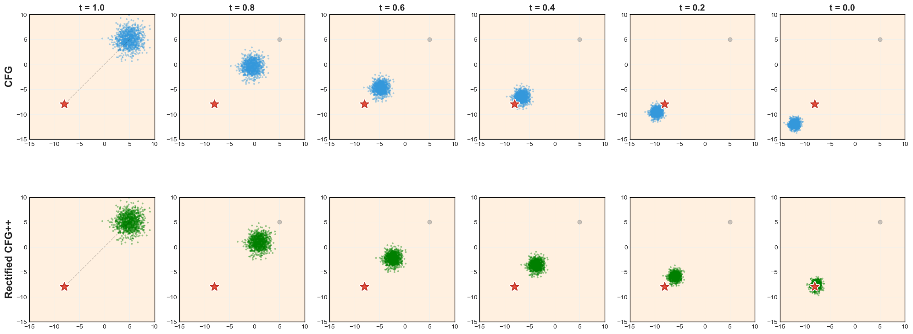
200 trajectories on 2D mixed Gaussian. Top: CFG (blue) drifts off support. Bottom: Ours (green) smooth on-manifold.
CFG (top)
Trajectories initially overshoot, leaving the learned transport manifold. Sharp late-stage corrections pull samples back — but damage is done. Final distribution is noisy and off-center.
Rectified-CFG++ (bottom)
Smooth convergence throughout. Predictor anchors each step on the flow field. Corrector applies bounded guidance. Samples arrive at target with tight concentration — no drift, no sharp corrections.
Flux: Baseline vs. CFG vs. Rectified-CFG++ (3 Prompts)
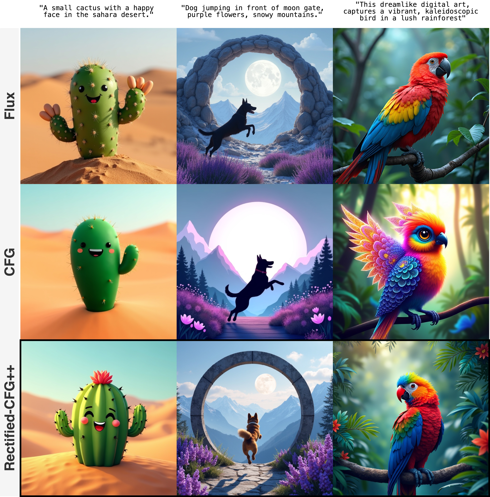
Top: Flux baseline (no guidance). Middle: CFG — oversaturated, cartoonish, structural distortion. Bottom: Rect-CFG++ — sharp details, faithful colors, correct structure.
Cactus: CFG turns photorealistic cactus into cartoon with emoji-like face. Ours preserves desert realism.
Dog + moon gate: CFG loses the stone arch, replaces with painted mountains. Ours preserves the gate structure and moon.
Parrot: CFG turns the bird into a psychedelic abstraction. Ours preserves natural plumage and forest setting.
Flux: Baseline vs. CFG vs. Rectified-CFG++ (Same Prompt, Same Seed)

Same model (Flux-dev), same prompt, same seed — three guidance strategies. Left: no guidance (baseline). Center: CFG (ω=3.5). Right: Rectified-CFG++ (λ=0.5). Ours: sharper details, faithful colors, no rainbow artifacts.
Diverse Prompt Gallery: Rectified-CFG++ Handles Everything
All images generated with Rectified-CFG++ on Flux-dev. No cherry-picking — random prompts from MS-COCO and Pick-a-Pic.
Photorealistic scenes
Landscapes, portraits, food, architecture — natural lighting, correct shadows, no oversaturation. The on-manifold property preserves the photorealistic distribution Flux was trained on.
Artistic & stylized
Oil paintings, digital art, fantasy scenes — style transfer works correctly because α(t) allows strong guidance early (global style) while preserving fine brush strokes late.
Text & compositional
Signage, book titles, multi-object scenes — the hardest category for any guidance method. α(t)→0 at late steps preserves pixel-precise text rendering and spatial relationships.
SD3.5: 4-Way Guidance Comparison (Same Prompt, Same Seed)
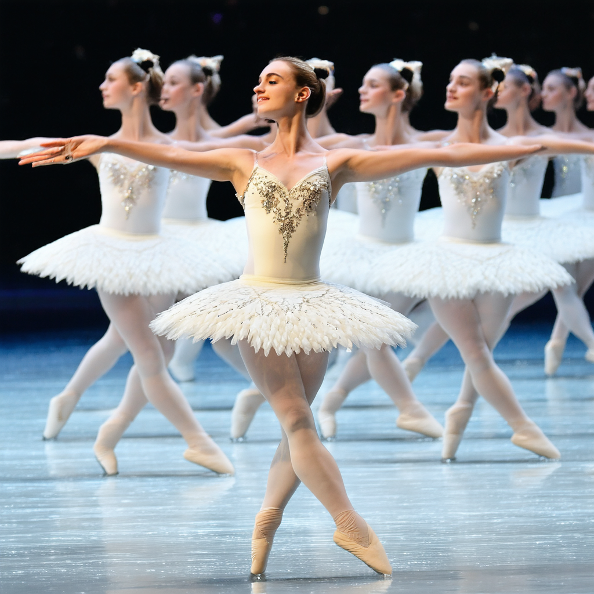
Flux-dev: CFG vs. Ours (8 Comparisons)
More Visual Comparisons: SD3 & Lumina-Next
Drop-in replacement across all rectified flow models — no retraining, no arch changes.
Text Rendering: The Stop Sign Test
Text-heavy prompts are especially sensitive to off-manifold drift at late denoising steps
CFG
Rectified-CFG++
Prompt: "A stop sign with 'ALL WAY' written below it."
CFG: "STOP" text distorts — letter shapes warp, "ALL WAY" becomes unreadable. Off-manifold drift corrupts high-frequency text strokes in the final denoising steps.
Ours: Crisp, photorealistic stop sign. α(t)→0 near t=0 ensures pure conditional flow during fine detail resolution — text strokes remain pixel-precise.
Text Rendering: Neon Street Sign
CFG
Rectified-CFG++
Prompt: "A neon street sign that says 'CyberCore Cafe', glowing in magenta and blue."
CFG garbles the neon letters — "Cyberre Cidie Cafe" instead of "CyberCore Cafe". Glow halos and letter boundaries bleed together. Ours renders each letter distinctly with clean neon glow separation.
Text Rendering: Headlines & Inscriptions
CFG
Ours
CFG
Ours
Prompt: "A crow detective reading a paper titled 'Feathered Conspiracies', headline in bold noir font."
Prompt: "A magical sword embedded in stone, with the name 'SOLARFANG' etched along its blade in glowing runes."
CFG: "Feathered Conspiracies" → "Feathhrad Conspiracies". "SOLARFANG" → garbled runes. Ours: Both headlines render correctly with proper typography — even on complex surfaces like aged paper and glowing stone.
Text Rendering: Presentations & Artistic Text
CFG
Ours
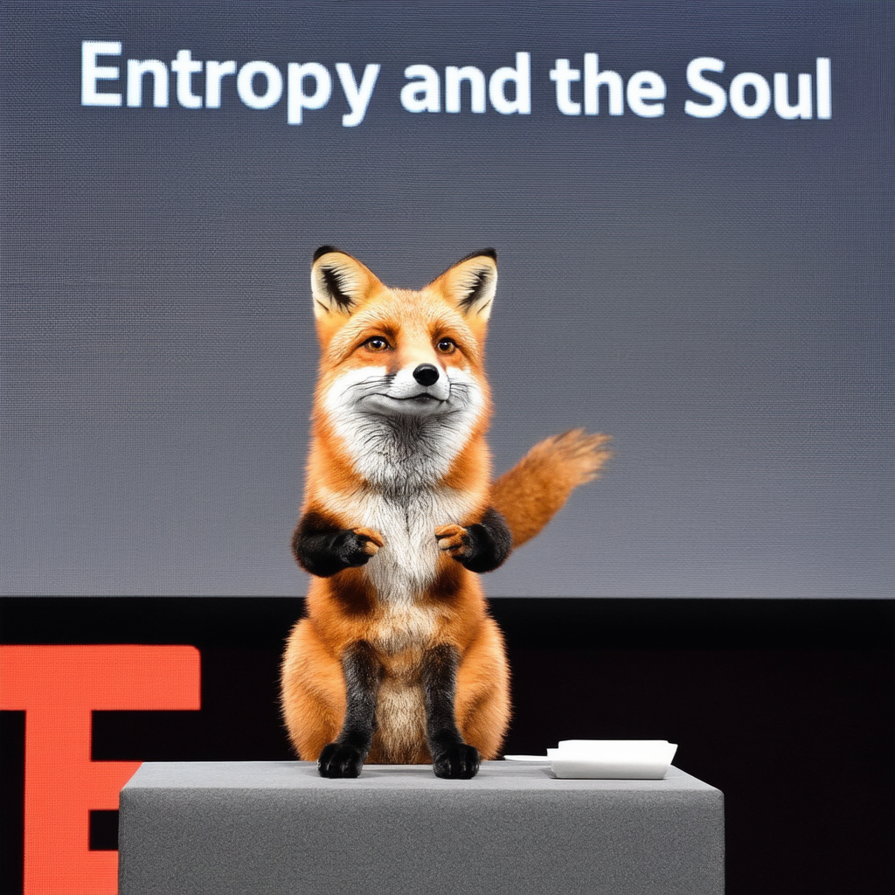
CFG
Ours
Prompt: "A fox giving a TED talk, slide behind reads 'Entropy and the Soul'."
Prompt: "A burning scroll with the title 'Soulbound by Nightfall' in ornate calligraphy."
CFG: "Entropy and the Soul" → "Entφy amd the Soul". Title on scroll barely readable. Ours: Clean title text on both the presentation screen and the burning scroll — fine details preserved by zero guidance at final steps.
Text Rendering: Carved & Printed Text
CFG
Ours
CFG
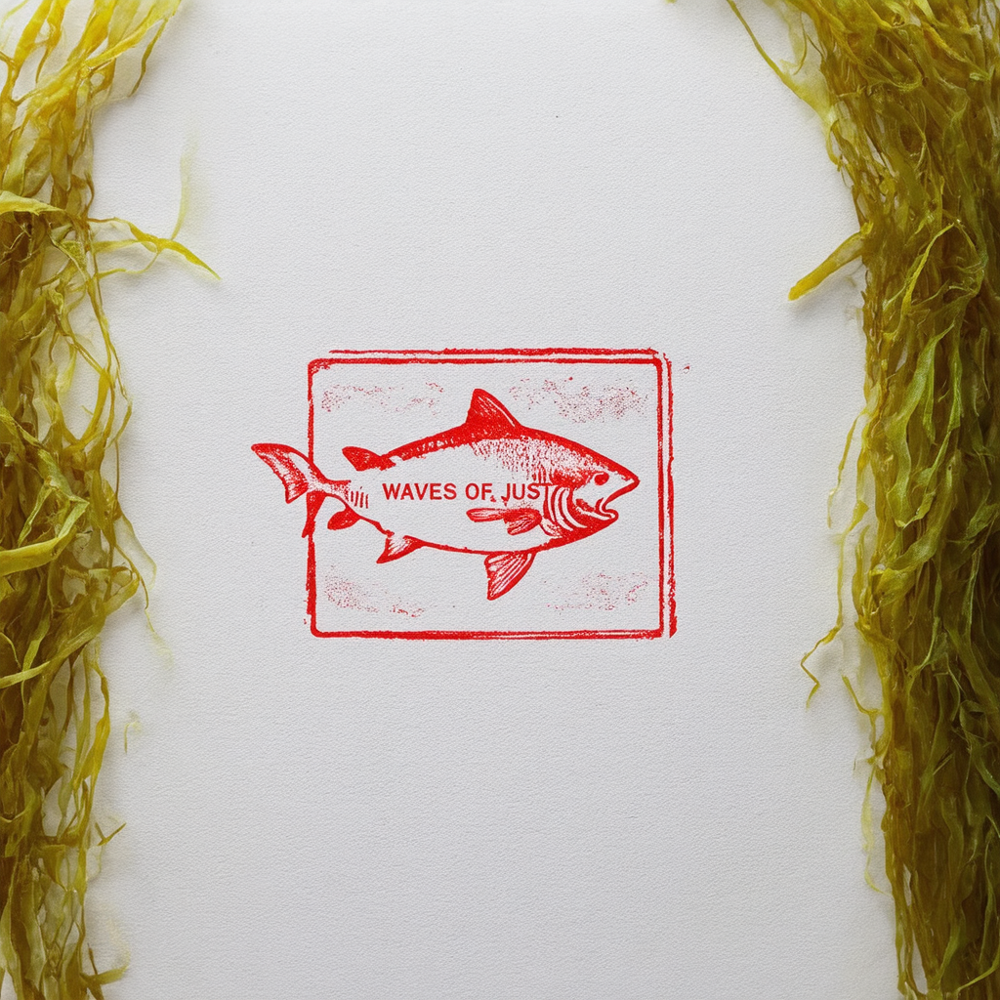
Ours
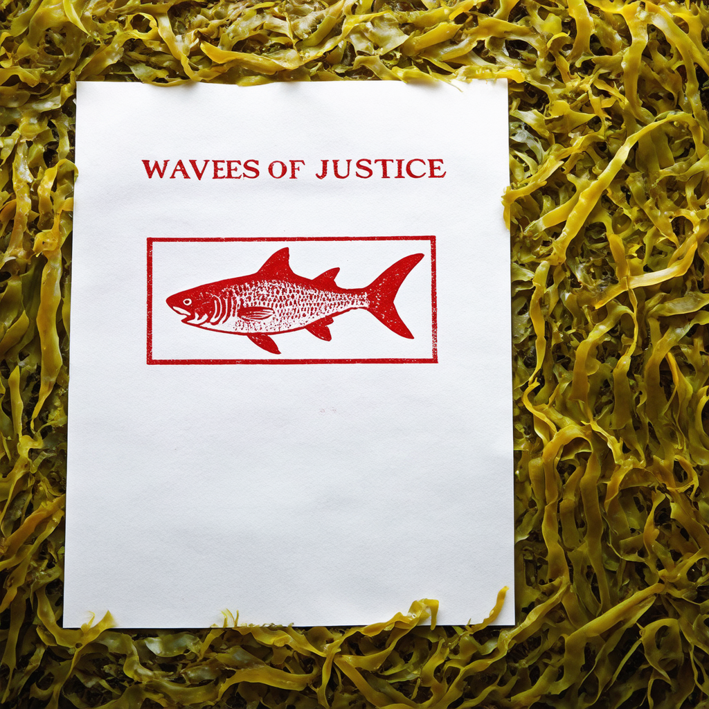
Prompt: "A desert gate carved in sandstone reading 'CITY OF WHISPERS'."
Prompt: "A Japanese fish stamp print with 'WAVES OF JUSTICE' in red ink."
Pattern: Across all text types — neon, carved stone, ink stamps, calligraphy, digital displays — Rectified-CFG++ consistently preserves legibility. The adaptive schedule α(t)→0 is the key mechanism: no guidance perturbation during fine-detail resolution.
Text Legibility: Full Gallery (SD3.5)
Each column: CFG left → Rectified-CFG++ right
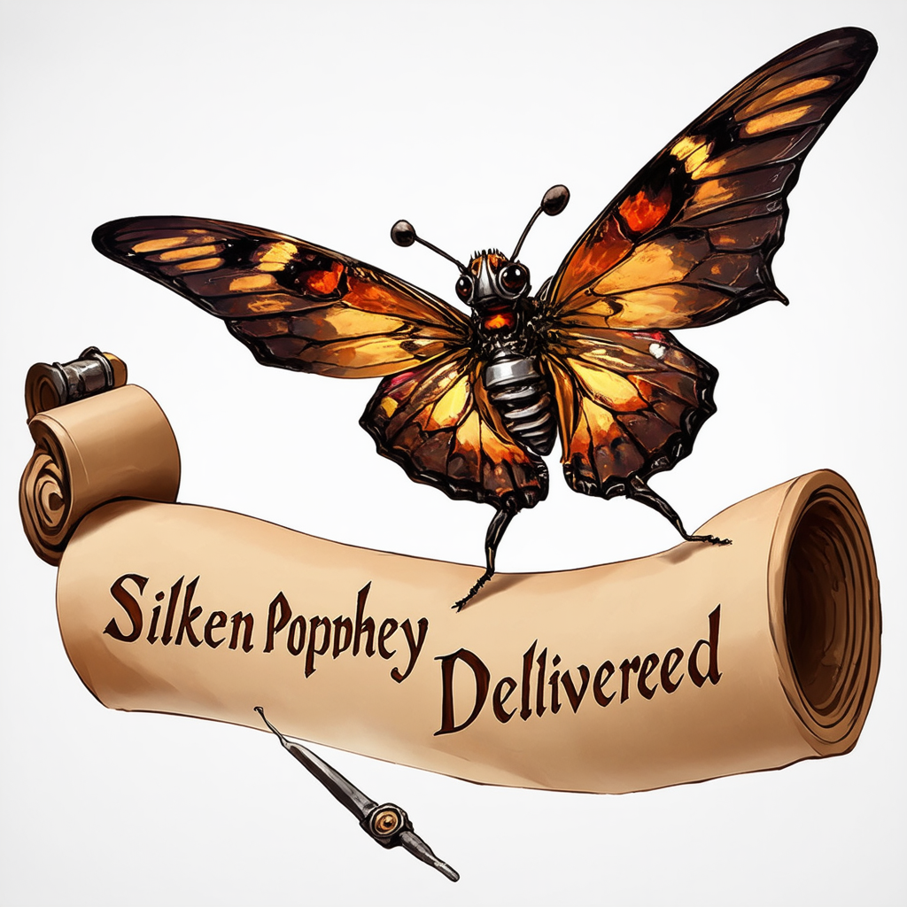
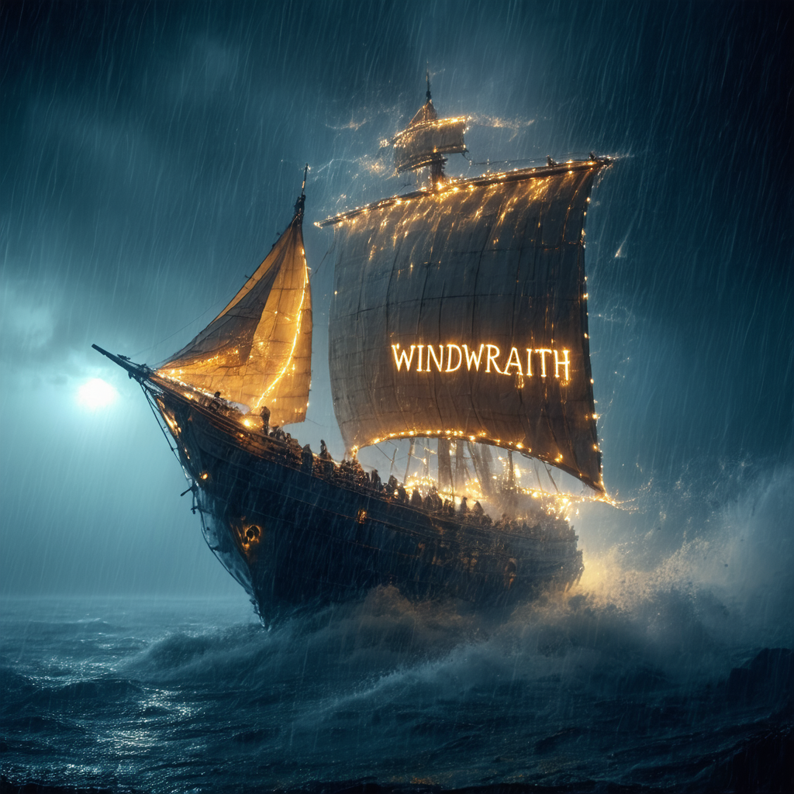
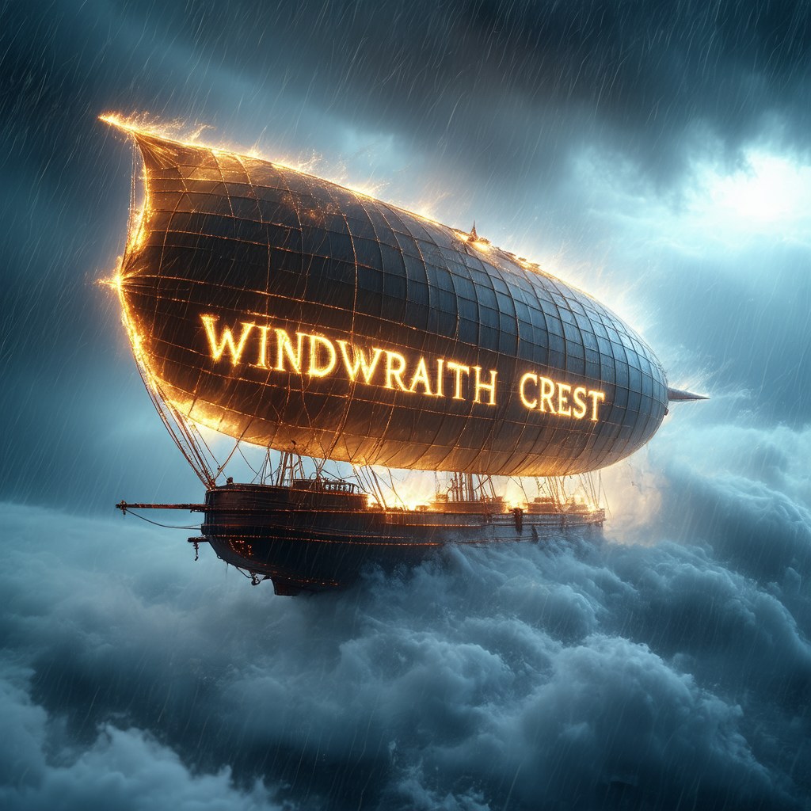
Consistent text legibility across all prompts — the adaptive schedule α(t) is the key mechanism.
Quantitative: MS-COCO 10K — Consistent Improvements
| Model | Method | FID↓ | CLIP↑ | ImgRwd↑ | Pick↑ | HPS↑ |
|---|---|---|---|---|---|---|
| Lumina | CFG | 26.93 | 0.261 | 0.547 | 21.03 | 0.253 |
| Lumina | Ours | 22.49 | 0.268 | 0.621 | 21.19 | 0.259 |
| SD3 | CFG | 26.33 | 0.273 | 0.684 | 21.48 | 0.264 |
| SD3 | Ours | 24.68 | 0.278 | 0.753 | 21.62 | 0.269 |
| Flux | CFG | 37.86 | 0.285 | 0.892 | 22.04 | 0.279 |
| Flux | Ours | 32.23 | 0.289 | 0.961 | 22.18 | 0.283 |
| Guidance (SD3.5) | FID | ImgRwd | CLIP | HPSv2 |
|---|---|---|---|---|
| CFG | 67.71 | 1.053 | 0.352 | 0.294 |
| CFG-Zero* | 68.39 | 0.995 | 0.346 | 0.288 |
| APG | 67.23 | 1.075 | 0.351 | 0.294 |
| Rect-CFG++ | 67.15 | 1.085 | 0.351 | 0.296 |
Best or tied on every metric, every model.
User Study: 30 Experts × 32 Prompts × 4 Models = 15,360 Responses
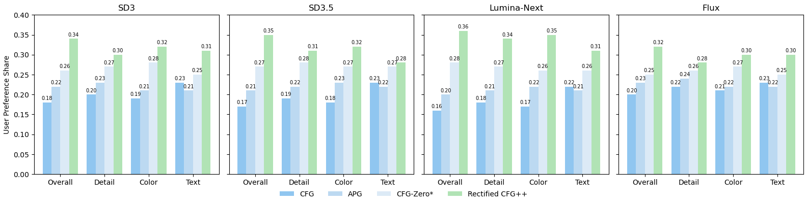
4-way forced choice: CFG (dark blue), APG (medium blue), CFG-Zero* (light blue), Rectified-CFG++ (green). 4 criteria × 4 models. Green bar is tallest in every single comparison.
Overall: 34-36% preference share across all models (random chance = 25%). p < 0.001 vs second-best (APG).
Text legibility: Highest improvement dimension — 28-32% vs 22-25% for alternatives. α(t) schedule is critical.
Protocol: Fleiss' κ = 0.61 (substantial agreement). Images randomized. Experts with CV/generative AI knowledge.
Ablation 1: Guidance Scale — CFG Crashes, Ours Stays Stable
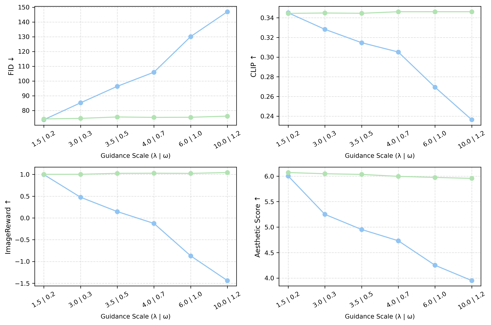
X-axis: guidance scale (λ for ours | ω for CFG). Y-axis: FID↓, CLIP↑, ImageReward↑, Aesthetic↑. Blue = CFG, Green = Ours.
CFG (blue curves)
FID explodes: 77 → 148 at ω=10. ImageReward collapses: 1.0 → -1.5. CLIP drops 30%. Aesthetic drops 35%. Catastrophic failure at high guidance.
Rectified-CFG++ (green curves)
FID: 75 → 75 (flat!). ImageReward: 1.0 → 0.95. CLIP stable. Aesthetic stable. Graceful degradation — never crashes.
Why this matters
CFG requires careful per-model tuning of ω to avoid collapse. Rect-CFG++ is robust across a 50× range of λ — no hyperparameter sensitivity. One setting works everywhere.
Ablation 2: Sampling Steps — Better Quality with Fewer Steps
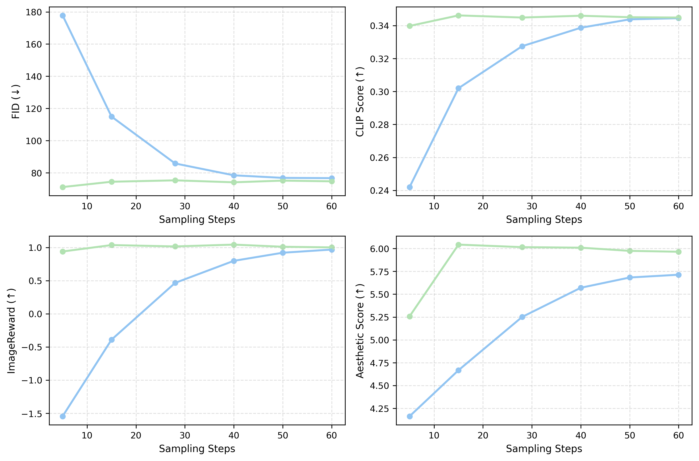
X-axis: sampling steps. Blue = CFG, Green = Ours. Our method converges faster across all metrics.
Ours at 5 steps vs CFG at 5 steps
FID: 71 vs 178 (2.5× better). ImageReward: 1.0 vs -1.5. At ultra-low NFE, CFG produces garbage; ours produces usable images.
Ours at 15 steps ≈ CFG at 28 steps
Same FID, same CLIP, same ImageReward — but ~2× faster inference. This is because our on-manifold trajectories converge more efficiently.
Component ablation (SD3.5)
| Config | FID | CLIP | HPSv2 |
|---|---|---|---|
| Unconditional only | 91.12 | 0.144 | 0.187 |
| w/o Predictor | 73.70 | 0.341 | 0.297 |
| w/o Corrector | 74.65 | 0.341 | 0.298 |
| Full | 72.97 | 0.345 | 0.300 |
Both predictor and corrector essential.
Key Takeaways
First on-manifold guidance for rectified flow models. Predictor-corrector with adaptive decay. Provably bounded manifold distance.
4-16× tighter distributional bounds than CFG. Three propositions with formal proofs. Integrated guidance λ/(γ+1) vs ω-1.
Universal drop-in, zero overhead. Flux, SD3, SD3.5, Lumina — all improve. No retraining. 15 steps ≈ CFG at 28.
43.5% preference, 15K expert responses. Best on detail, color, text, overall across all models. p < 0.001.
Next: Rect-CFG++ for video generation (Sora-class) · Distilled flow models · Integration with LumaFlux for guided HDR generation.